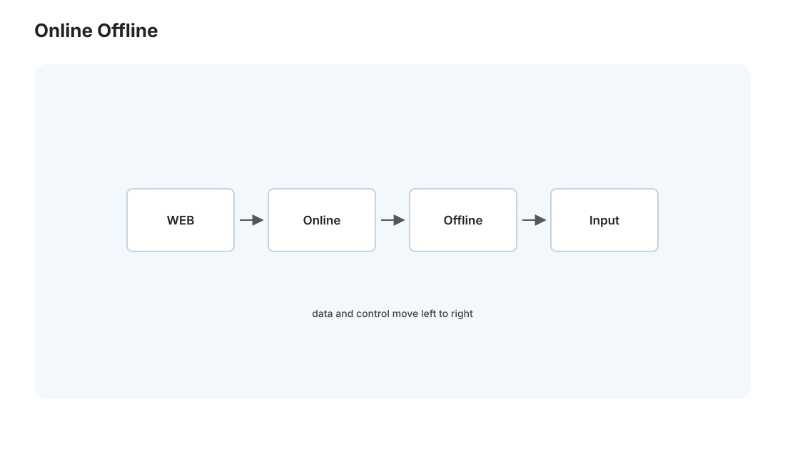
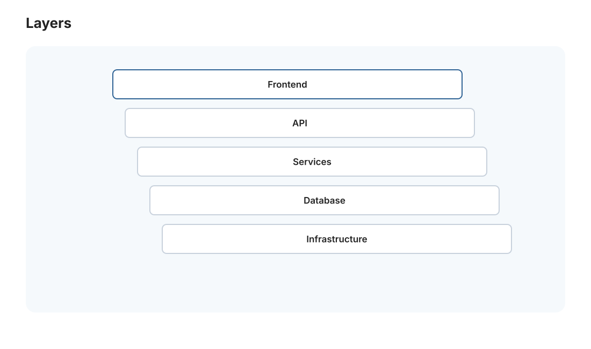
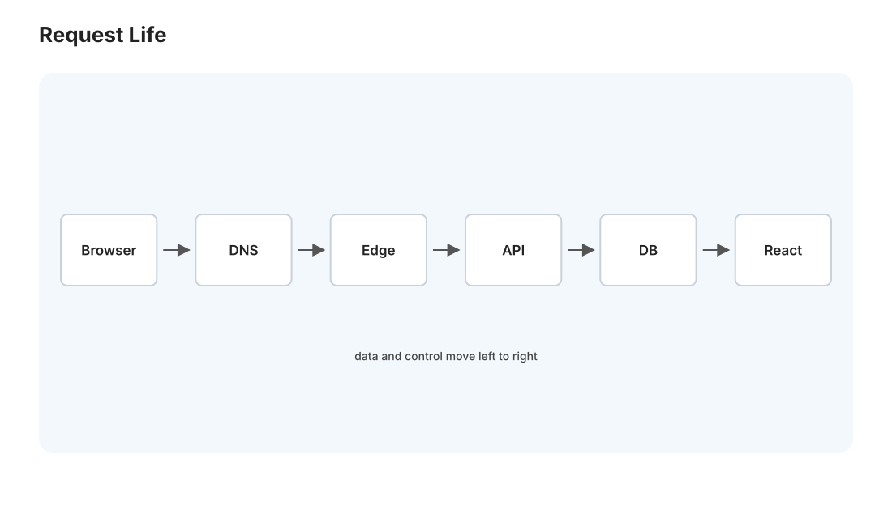

本页目录
全栈 I · 请求的一生（Medusa 解剖）
对标：Berkeley CS169 / MDN Web 全景 / 你自己的 Medusa 系统 ｜ 前置：net 线（HTTP/TLS/DNS）、db 线、os 线 全栈线不从玩具讲起——你已经在运营一个真实全栈系统（Medusa：FastAPI + React SPA + Postgres + Docker + cloudflared + schtasks）。所以这条线拿它当解剖标本，每讲一层就回看你系统里对应那块。这一页是全景总纲：追踪一个请求从你敲下 medusa.hhzi.eu.cc 到页面显示的完整旅程，把 net/db/os 学的东西串成一条你每天都在跑的链路。
学习层：一条请求究竟在哪个边界停住？
1. 具体谜题：同一个域名，为什么一条请求不回源？
假设用户第一次打开 Medusa：浏览器需要 app.a3f2.js，随后请求 GET /api/v1/articles?topic=systems。此时 CDN 中已有 JS，但 API 缓存刚过期；离线任务刚把一批文章写进 Postgres。先预测，不要读下方链路：
- 哪一个请求会经过 cloudflared、FastAPI 和 Postgres？
- 若 API 缓存命中，哪几个阶段可以被边缘直接截断？
- 把“最慢的一步”误报成数据库，最可能漏掉哪一种证据？
实验台会把同一请求拆成在线读、边缘命中、缓存未命中和离线写入四条固定轨迹；先押路径，再查看每个阶段的耗时与证据。这里的目标不是背“浏览器到服务器”，而是能从日志、缓存头和 trace 判断哪一条边界真的被穿过。
2. 最小模型：路径是阶段的串接，缓存是有条件的截断
把一次请求写成有向路径
静态 bundle 的边缘命中只走到 edge；动态 API 的冷缓存走完整路径；离线生产则是另一条 scheduler → fetch → analyze → db write 路径，不能把它误记成用户请求的同步子步骤。一个够用的时间账本是
而不是把某一层的名词当作延迟解释。下面的实验固定每个阶段的数值，故障注入只改变路径，不改变测量口径。
3. 正式机制与不变量：读写分离要留下可追溯证据
- 缓存命中不等于“没有请求”：DNS、TLS 和浏览器仍可能发生；命中只表示在声明的 cache key、TTL 和认证条件下不必回源。
- 在线读写分离：用户读应只消费离线任务发布的版本
v；重分析、抓取和写库不应阻塞读请求。若返回v，日志必须能关联到该版本和请求 id。 - API 契约：
GET的幂等/可缓存语义、状态码和分页约束属于路径的一部分；把POST当可随意缓存的GET会破坏副作用边界。 - 瓶颈证据：阶段耗时、队列等待、命中率和响应大小必须分账。只有“DB 查询耗时高且 trace 穿过 DB”时，数据库才是这条请求的已证瓶颈。
因此可检查三个不变量：缓存命中不穿越被跳过的源站；在线读不执行离线写入；响应中的数据版本能回溯到一个已发布的生产批次。
4. 失败边界与迁移任务
本模型不证明 CDN 一定新鲜，也不覆盖 DNS 传播、TLS 证书轮换、连接复用、浏览器缓存策略或真实多租户认证。带用户身份的响应不能只按 URL 缓存；离线批处理成功也不等于用户看到最新数据；端到端时间还会受到排队、重试和浏览器渲染影响。
迁移任务：为“按 topic 取分析卡片”画一张带请求 id、版本号、cache hit/miss 和阶段耗时的时序图，再决定哪些证据足以把瓶颈归因给 CDN、隧道、FastAPI、Postgres 或浏览器。把同一方法迁移到 web-02 的 N+1 查询和 web-03 的首屏渲染，不要只写“后端慢”。
JavaScript 失效时的静态读法：先按“经过的阶段”判断是否回源，再把表中阶段耗时相加；缓存命中只截断源站路径，不抹掉 DNS/TLS 或浏览器渲染。
| 固定轨迹 | 经过的阶段 | 是否触达 Postgres | 证据重点 |
|---|---|---|---|
| JS 边缘命中 | DNS → TLS → edge → render | 否 | Age/cache header、浏览器资源计时 |
| API 冷缓存 | DNS → TLS → edge → tunnel → app → db → response → render | 是 | trace 中的 DB span 与版本号 |
| API 边缘命中 | DNS → TLS → edge → response → render | 否 | cache key、TTL 与响应版本 |
| 离线生产 | scheduler → fetch → analyze → db write | 写入 | 批次 id、写入行数、发布版本 |
1. 全栈的分层地图（Medusa 实体对照）


一个现代 Web 系统的分层，和你的 Medusa 一一对应：
| 层 | 通用职责 | Medusa 里是谁 |
|---|---|---|
| 客户端 | 浏览器渲染 UI、发请求 | React 18.3.1 SPA（Vite 构建） |
| 边缘/网络 | DNS、CDN、TLS 终止、隧道 | Cloudflare + cloudflared 隧道 |
| 应用服务器 | 处理 HTTP、业务逻辑 | FastAPI（uvicorn :8000） |
| 数据层 | 存取数据 | Postgres（medusa-postgres, pgvector, Docker） |
| 离线管线 | 定时批处理 | schtasks 定时的 fetch/分析/预测脚本 |
关键区分——在线 vs 离线：Medusa 有两条路径。在线（用户访问）：浏览器 → FastAPI → 查 Postgres → 返回。离线（数据生产）：schtasks 定时跑 RSS 抓取 → 聚类 → 分析 → 写 Postgres。用户请求只读那些离线预算好的结果——这是"读写分离、把重活挪到离线"的经典架构（🔗 与 dist-03 系统设计、MLSys 训练/推理分离同构）。理解这个分工，Medusa 的整体设计就清晰了。
2. 请求的一生：一步步追踪

你在浏览器整 https://medusa.hhzi.eu.cc 回车，发生了什么（把 net 线的知识走一遍实景）：
- DNS 解析（net-02）：域名 → Cloudflare 边缘 IP。
- TCP + TLS 握手（net-01/crypto-02）：与 Cloudflare 边缘建立加密连接。
- CDN / 边缘：静态资源（JS/CSS bundle）可能直接由 Cloudflare 缓存返回（net-02），不回源。
- 隧道回源：动态请求经 cloudflared 隧道穿透到你 Win 机的 FastAPI :8000（隧道让内网服务免公网 IP、免自己配证书）。
- 应用服务器（web-02）：FastAPI 路由匹配 → 执行处理函数 → 可能查数据库。
- 数据库查询（db 线）：Postgres 执行 SQL（用上索引否？EXPLAIN！db-02）、返回结果。
- 响应组装：FastAPI 序列化成 JSON、加响应头、经隧道 → CDN → 浏览器。
- 前端渲染（web-03）：React 拿到数据、更新虚拟 DOM、浏览器绘制。
"输入 URL 后发生了什么"是最经典的系统面试题——现在你能拿自己的系统一口气讲完，每一步都摸得着。这条链就是全栈的骨架，后面三页（web-02/03、se、cloud）分别深入其中的层。
3. 前后端的契约：API
前端和后端通过 API 通信——最常见 REST（资源 + HTTP 方法：GET /articles 取列表、GET /articles/42 取一个、POST 建、PUT/PATCH 改、DELETE 删）。约定：
- HTTP 方法语义：GET 只读幂等（可缓存）、POST 有副作用（🔗 net-02 缓存、sec 线 CSRF 与方法安全性相关）。
- 状态码：2xx 成功、4xx 客户端错（400 参数错、401 未认证、403 无权、404 没有）、5xx 服务端错——正确用状态码是 API 设计的基本功。
- JSON 数据格式 + 版本化（
/api/v1/）+ 分页（大列表别一次全返，🔗 db-02 keyset 分页）。
替代方案：GraphQL（客户端声明要哪些字段，避免 over/under-fetching）、gRPC（二进制、高性能、微服务间）、WebSocket/SSE（实时推送，net-02）。REST 是默认，其余按需——Medusa 这种读多写少的分析展示，REST 足够。
4. 无状态与状态放哪
HTTP 无状态（net-02），但应用需要状态（谁登录了、购物车）——状态放哪是架构核心决策：
- 会话状态：认证信息放哪？服务端 session（存 Redis/DB）vs 客户端 token（JWT，自包含）——各有取舍（🔗 sec-02 会讲认证安全）。
- 应用服务器应尽量无状态：这样能水平扩展（多个实例，请求分给任一个都行，🔗 dist 线）——状态外置到数据库/缓存。Medusa 现在是单实例，但"无状态应用 + 有状态数据层"是它未来扩展的正道。
- 缓存层：热数据放 Redis/内存，减数据库压力（🔗 csapp-02 缓存思想的系统级放大，贯穿全栈）。
5. 练习与要点
例 1（画你自己的请求链） 把第 2 节的 8 步画成时序图，标出每步大概耗时（DNS ~20ms、TLS ~50ms、DB 查询 ~?ms）——找出 Medusa 请求的瓶颈在哪层，这是性能优化的起点。
例 2（设计一个 API） 为 Medusa 的"按 topic 取分析卡片"设计 REST 端点（路径、方法、参数、分页、状态码）——把 API 设计原则用到你自己的系统。
例 3（状态该放哪） 若 Medusa 要加用户登录，会话状态放服务端 session 还是 JWT？考虑单实例现状 vs 未来多实例——理解"无状态应用易扩展"的权衡。\(\blacksquare\)
下一页：全栈 II——后端工程：FastAPI 那层深入，路由、ORM、异步、认证、错误处理，以及后端的常见陷阱。